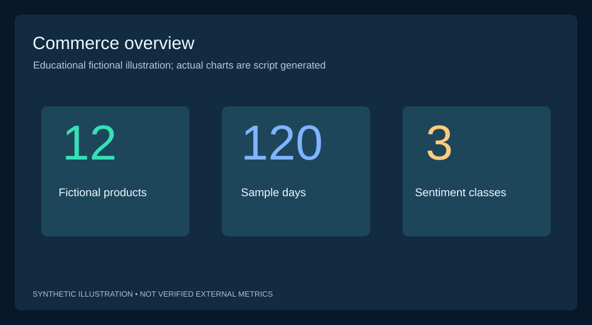
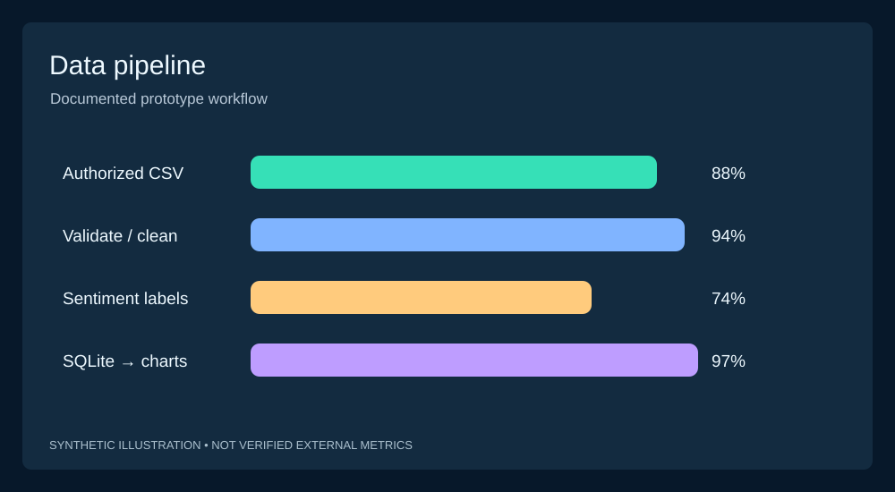
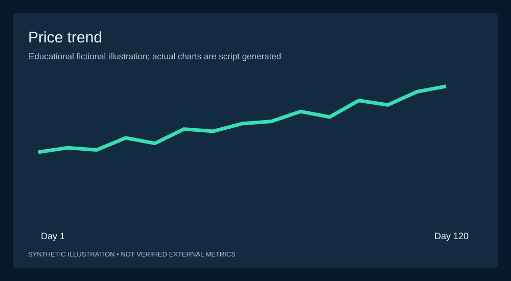
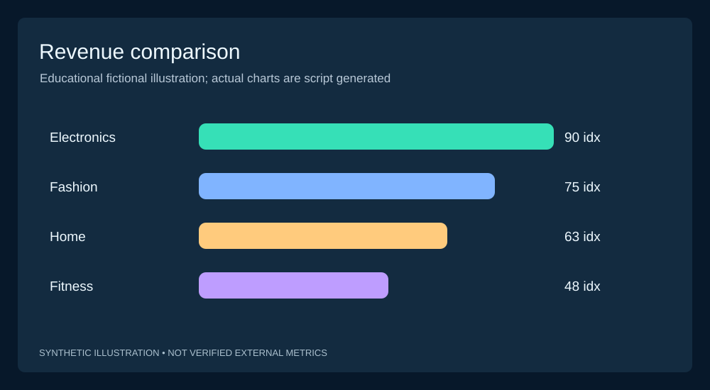
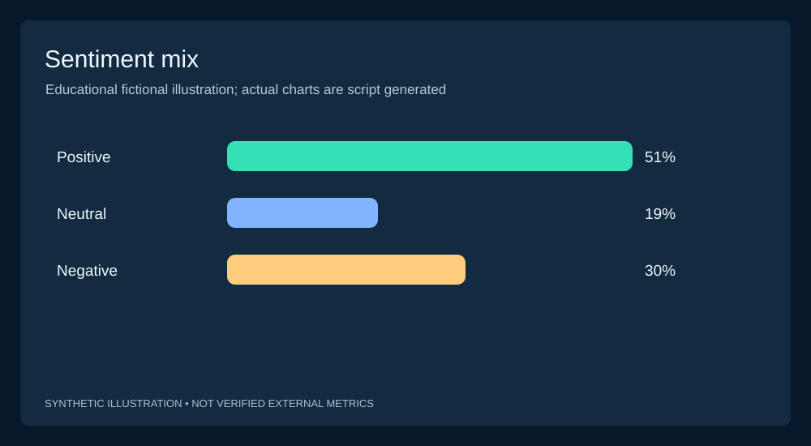
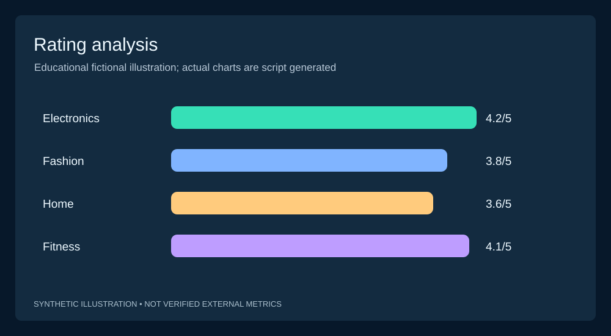
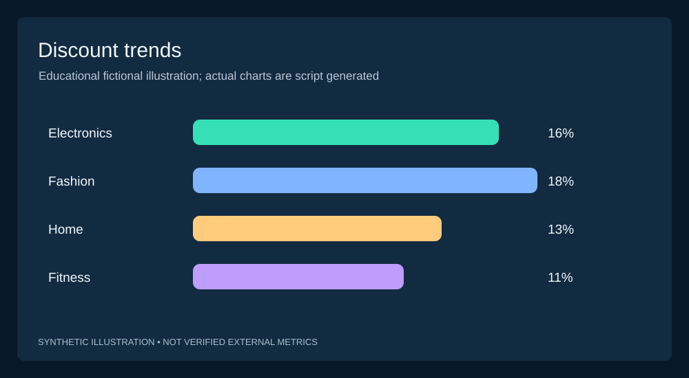
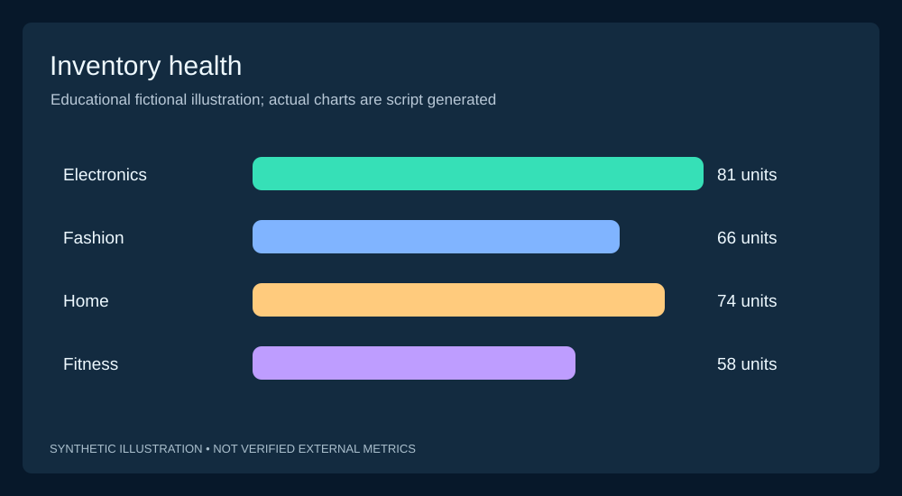
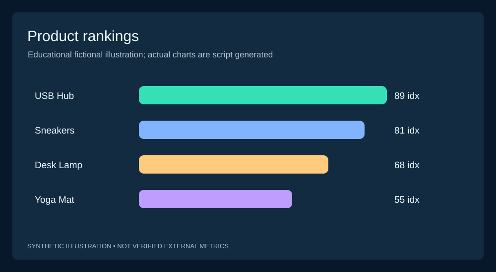
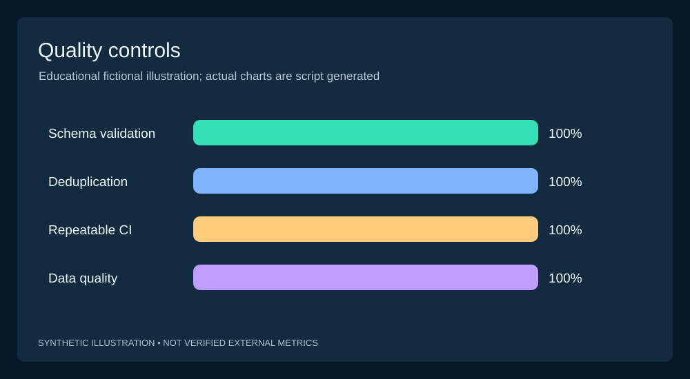

CommerceLens
Automated E-commerce Analytics & Sentiment
A source-aware, reproducible analytics pipeline transforming product observations and reviews into SQL metrics, review sentiment and interactive dashboards.

Evidence first, claims carefully scoped
These are deterministic demo fixture quantities, not evidence of external data collection, commercial transactions, or verified model accuracy. This implementation intentionally does not scrape retailers.
CSV → Validate → Classify → SQL → Explain

Import a licensed CSV or use the synthetic generator. Validate dates, prices and review referential integrity; count rejected records and duplicates; classify review text with an explainable negation-aware lexicon; persist a constrained SQLite snapshot; compute KPI aggregates and comparisons; render in Streamlit.
python -m unittest discover -s tests -v python -m src.pipeline.run --demo python -m pip install -r requirements.txt streamlit run dashboard/app.py python -m src.analytics.charts
Ten project graphs, workflow visuals and reporting concepts
The following diagrams are deliberately labeled illustrative. The repository also includes code to export ten new data-driven PNG charts from its current SQLite snapshot.








Data quality, constraints and known gaps
- Primary key is product ID plus date; multi-seller same-day observations need model expansion.
- Price multiplied by fictional units creates a demo estimate, not verified sales revenue.
- Review lexicon labels are interpretable but not independently evaluated on human annotations.
- GitHub CI verifies deterministic sample processing and unit tests; it does not validate production retailer accuracy.
- There is no publicly deployed Streamlit backend, external retailer API or production privacy and security certification.